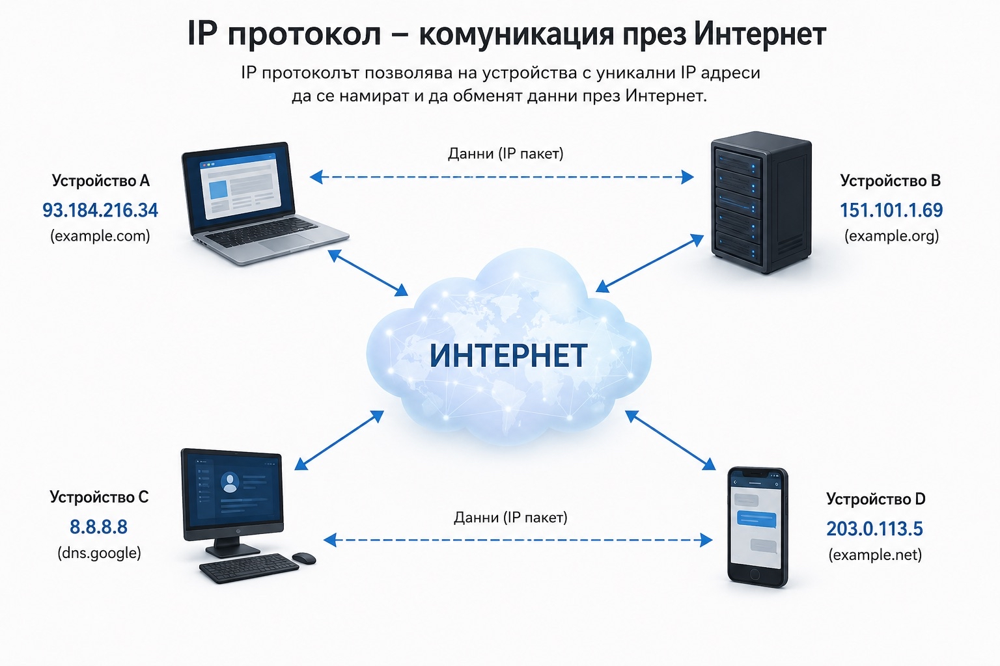
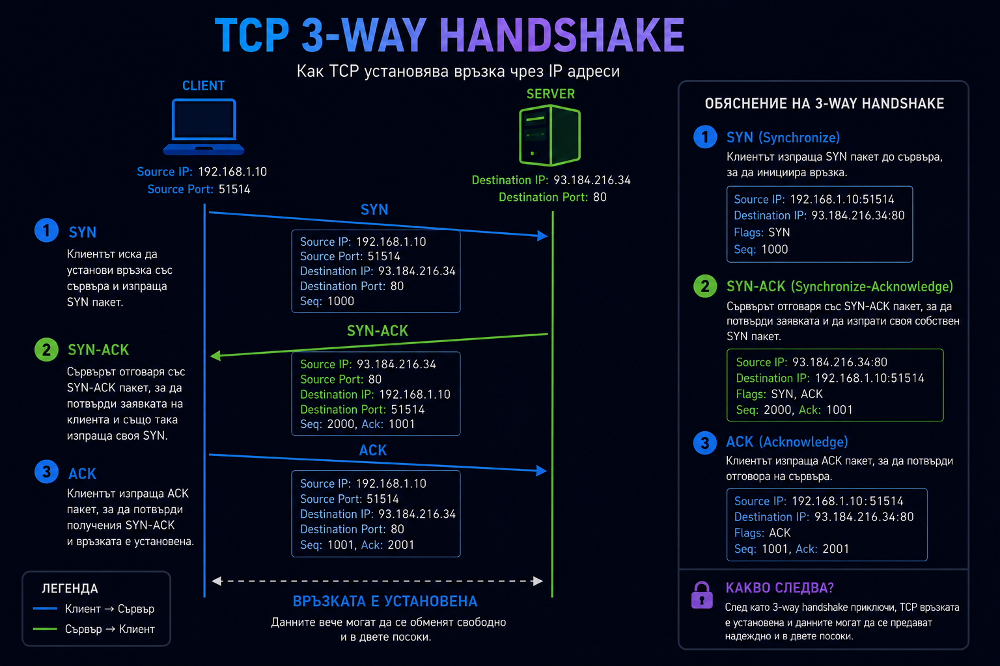
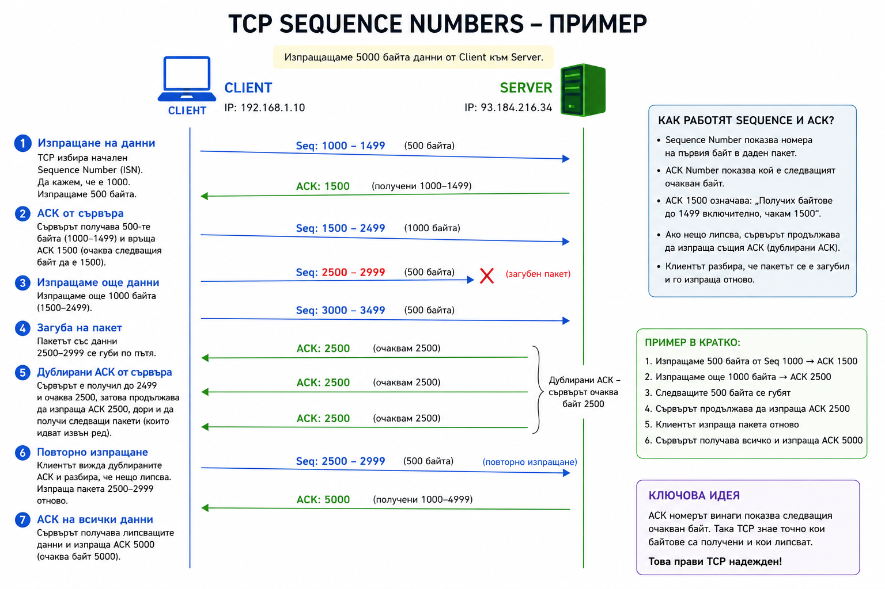
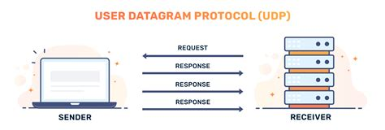
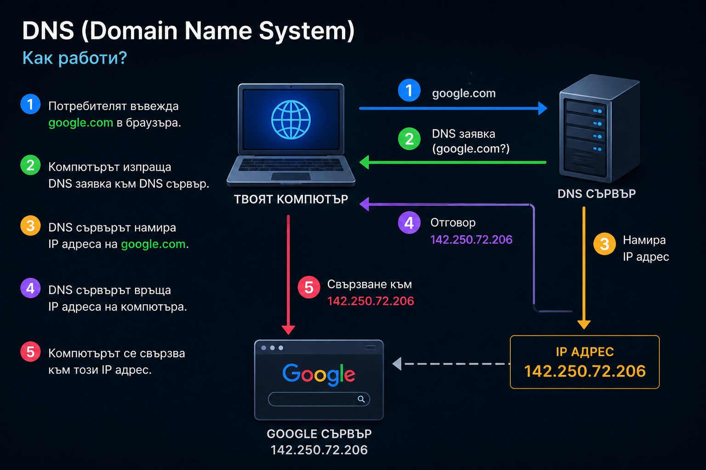
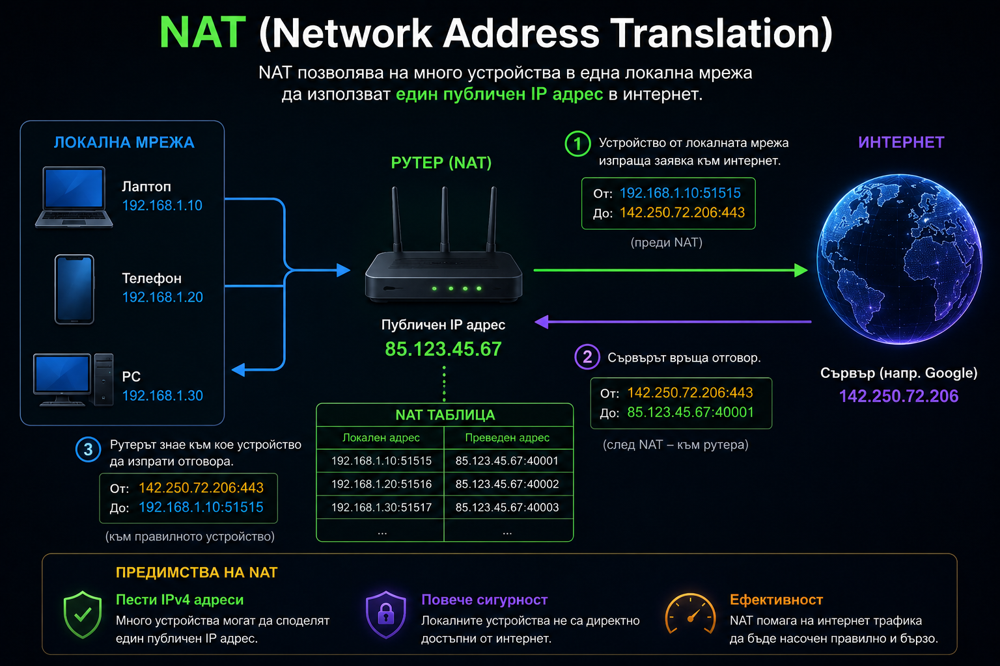

Сайтът е предназначен за начинаещи и хора, които тепърва навлизат в Networking, мрежи и интернет протоколи. Работата по сайта продължава и с времето ще бъдат добавяни нови теми като Sockets, WebSockets, HTTP, HTTPS, TLS и др.
Networking (мрежи) е начинът, по който устройствата комуникират помежду си чрез интернет или локални мрежи. Всичко, което правиш онлайн — от отваряне на сайт до изпращане на съобщение — минава през мрежови протоколи като TCP, IP и други. В това обяснение са представени основните концепции в Networking по прост и лесен за разбиране начин. Тук няма да намерите дълбока теория — някои неща още чакат developer-а да ги научи. :]
IP адресът е уникален номер, който идентифицира устройство в мрежата. Всеки компютър, телефон, таблет или сървър има IP адрес, чрез който може да изпраща и получава информация. Можеш да си представиш IP адреса като домашен адрес. Ако някой иска да ти изпрати писмо, той трябва да знае къде живееш. По същия начин, когато компютър изпраща данни през интернет, той трябва да знае към кой IP адрес да ги изпрати. Например, когато напишеш google.com в браузъра си, компютърът първо разбира кой е IP адресът на сървърите на Google. След това изпраща заявка към този адрес и получава отговор със съдържанието на уебсайта. Без IP адреси устройствата в интернет не биха знаели къде да изпращат информацията и комуникацията между тях би била невъзможна.

IP адресът не е просто произволно число, а по-скоро система, която позволява на устройствата в интернет да се намират и да си говорят помежду си. Най-използваният тип е IPv4, който изглежда като четири числа, разделени с точки – например 192.168.1.1. Тези четири части се наричат октети и всяка една от тях може да има стойност от 0 до 255. Причината за това е, че компютрите работят с двоична система (0 и 1), а един такъв “октет” представлява 8 бита информация, което дава точно 256 възможности. Затова и всяка част е ограничена до този диапазон. Можеш да си го представиш като адрес, който е разделен на 4 секции, като всяка секция добавя по-точна информация къде се намира дадено устройство в мрежата. Именно комбинацията от тези четири числа прави всеки IPv4 адрес уникален. Проблемът е, че IPv4 има ограничен брой възможни комбинации – около 4.3 милиарда. В днешно време това не е достатъчно, защото почти всяко устройство (телефон, компютър, телевизор, дори смарт устройства) има собствен IP адрес, затова се стига до недостиг. За да се реши този проблем е създаден IPv6. Той изглежда доста по-сложно, защото използва комбинация от числа и букви, разделени с двоеточия, например нещо като 2001:db8::1. Но идеята зад него е много проста – просто има огромно количество възможни адреси, толкова много, че на практика не могат да свършат. Докато IPv4 има милиарди, IPv6 има толкова много комбинации, че може да даде уникален адрес на всяко устройство на Земята, много пъти напред. Освен това IPv6 е направен да бъде по-ефективен за съвременните мрежи – устройствата се разпознават по-бързо и комуникацията между тях е по-организирана. В реалния интернет често се използват и двата типа едновременно, но постепенно IPv6 става все по-важен, защото светът буквално изчерпва старите IPv4 адреси.
TCP (Transmission Control Protocol) е един от най-използваните протоколи в интернет. Неговата работа е да се грижи данните да стигнат успешно от едно устройство до друго. Когато отвориш уеб сайт, изпратиш имейл или свалиш файл, TCP помага информацията да не се изгуби по пътя и да пристигне в правилния ред. Ако някой пакет липсва или не стигне до получателя, TCP може да поиска той да бъде изпратен отново. Това го прави много надежден и затова се използва в голяма част от интернет услугите, които ползваме всеки ден. Преди да започне изпращането на реалните данни, TCP първо трябва да провери дали двете устройства могат да комуникират помежду си. Това става чрез процес, наречен 3-Way Handshake. По време на него клиентът и сървърът си разменят три съобщения – SYN, SYN-ACK и ACK. Чрез тях те потвърждават, че и двете страни са онлайн и са готови да започнат комуникация. След като този процес приключи успешно, връзката е установена и данните могат да започнат да се обменят.

След като TCP установи връзката чрез 3-Way Handshake, започва реалният обмен на данни. Тук идва една от най-важните причини TCP да е толкова надежден – той не просто изпраща информацията и се надява да пристигне. Вместо това следи какво е изпратено, какво е получено и дали нещо липсва. Един от основните механизми за това са Sequence Numbers. Можеш да си ги представиш като номера на страници в книга. Когато едно устройство изпраща данни, всеки байт получава свой номер. Така получателят знае точно в какъв ред трябва да подреди информацията. Ако пакетите пристигнат разместени, TCP може лесно да ги нареди правилно, защото вижда техните Sequence Numbers. Заедно с тях работят и Acknowledgements (ACK). Когато даден пакет бъде получен успешно, отсрещната страна изпраща ACK, с което казва: "Получих всичко до този номер, изпрати ми следващото." Например ако клиентът изпрати данни със Sequence Number 1000 и размер 500 байта, сървърът може да върне ACK 1500. Това означава, че очаква следващият байт да започва от номер 1500. Ако някой пакет се изгуби по пътя, TCP разбира това, защото не получава очаквания ACK. След определено време пакетът се изпраща отново. По този начин липсващите данни могат да бъдат възстановени без потребителят дори да забележи какво се е случило зад кулисите. TCP използва и нещо наречено Window Size. Вместо да чака потвърждение след всеки отделен пакет, той може да изпрати няколко пакета наведнъж. Това прави връзката много по-бърза. Получателят казва колко данни може да обработи в момента, а изпращачът се съобразява с това. Ако получателят е претоварен, TCP автоматично намалява скоростта на изпращане. Друга важна част е Flags полето в TCP заглавката. Вече видя SYN и ACK по време на установяването на връзката, но има и други. Например FIN се използва за нормално затваряне на връзка, когато комуникацията приключи. RST се използва за внезапно прекратяване на връзка при грешка или неочаквана ситуация. Всичко това се съдържа в така наречения TCP Header – малка част от всеки TCP пакет, която носи информация като Source Port, Destination Port, Sequence Number, ACK Number, Flags и други данни, необходими за управлението на връзката.

UDP (User Datagram Protocol) е комуникационен протокол, който е създаден да бъде бърз и опростен. За разлика от TCP, UDP не установява връзка между устройствата преди да започне изпращането на данни и не проверява дали те са пристигнали успешно. Просто изпраща пакетите към получателя възможно най-бързо. Това означава, че някои пакети могат да се изгубят по пътя или да пристигнат в различен ред, но в много ситуации това не е голям проблем. Например при онлайн игри, видео разговори или стрийминг на живо е по-важно информацията да пристигне бързо, отколкото всеки пакет да бъде доставен на всяка цена. Затова UDP често се използва в приложения, където скоростта е по-важна от перфектната надеждност.

UDP е много по-прост протокол от TCP. Той не използва механизми като 3-Way Handshake, Sequence Numbers, ACK съобщения или повторно изпращане на изгубени пакети. Когато приложение иска да изпрати данни чрез UDP, протоколът просто ги поставя в UDP пакет и ги изпраща към зададения Destination IP и Destination Port. Поради липсата на потвърждения, изпращачът няма представа дали пакетът е достигнал успешно до получателя. Ако пакетът се изгуби някъде по маршрута, UDP няма да разбере това и няма да го изпрати повторно. Отговорността за подобни проверки остава на самото приложение, ако то има нужда от тях. UDP Header е много малък – само 8 байта. Той съдържа основно Source Port, Destination Port, Length и Checksum. Тази проста структура означава, че има по-малко допълнителна информация във всеки пакет и съответно по-малко натоварване върху мрежата и устройствата. Да си представим онлайн игра. Играчът изпраща информация за позицията си десетки пъти в секунда. Ако един пакет се изгуби, няма смисъл играта да чака той да бъде изпратен отново, защото след няколко милисекунди вече има по-нова информация за позицията на играча. В такава ситуация UDP е по-добрият избор от TCP, защото позволява данните да се движат възможно най-бързо без допълнителни проверки. Затова UDP често се използва при онлайн игри, VoIP разговори, DNS заявки, видео стрийминг и други приложения, при които малка загуба на пакети е приемлива, но ниското закъснение е изключително важно. Най-просто казано, ако TCP може да се сравни с препоръчано писмо с потвърждение за получаване, UDP е като да хвърлиш бележка през прозореца – тя обикновено стига по-бързо, но никой не гарантира, че ще бъде получена.
DNS е нещо като телефонния указател на интернет. Хората помнят лесно имена като google.com, youtube.com или discord.com, но компютрите не работят с имена – те работят с IP адреси. Когато напишеш адрес на сайт в браузъра си, DNS намира IP адреса на този сайт и казва на компютъра къде точно да изпрати заявката. Без DNS щяхме да трябва да помним IP адресите на всички сайтове, които посещаваме, което би било доста неудобно. Вместо това просто пишем името на сайта и DNS върши останалата работа.
DNS е една от услугите, без които интернетът би бил много по-труден за използване. Представи си, че искаш да посетиш Google. Вместо да помниш някакъв дълъг IP адрес, просто пишеш google.com в браузъра си.
Проблемът е, че компютърът няма представа къде се намира google.com. Той разбира само IP адреси. Затова първата му работа е да попита DNS сървър:
Кой е IP адресът на google.com?
DNS сървърът проверява информацията си и връща нещо подобно на:
142.250.x.x
След като компютърът получи този адрес, вече знае къде да изпрати пакетите си и може да започне връзката със сървърите на Google.
Процесът изглежда приблизително така:
google.com
│
▼
DNS заявка
│
▼
DNS сървър
│
▼
142.250.x.x
│
▼
Връзка с Google
Повечето DNS заявки използват UDP порт 53(по default), защото са малки и трябва да се обработват възможно най-бързо. След като DNS свърши работата си и върне IP адреса, обикновено идва ред на TCP и HTTPS, които вече осъществяват реалната комуникация със сайта.
DNS също така пази информация за различни неща освен IP адреси. Той може да казва кои сървъри приемат имейли за даден домейн, кои DNS сървъри отговарят за него и дори да пренасочва един домейн към друг.
Най-важното, което трябва да запомниш, е че DNS е преводач между хората и компютрите. Ние използваме лесни за запомняне имена като google.com, а DNS ги превръща в IP адреси, които устройствата могат да използват, за да комуникират помежду си. Без DNS интернетът щеше да е много по-неудобен и почти никой нямаше да помни адресите на сайтовете, които използва всеки ден.

NAT е технология, която позволява много устройства в една локална мрежа(LAN) да използват един и същ публичен IP адрес в интернет. Представи си го като рецепционист в хотел. Хората отвън знаят само адреса на хотела, но рецепционистът знае в коя стая се намира всеки гост и предава съобщенията на правилното място.
По същия начин устройствата в дома ти имат вътрешни IP адреси като 192.168.1.10 или 192.168.1.20, които не могат директно да се използват в интернет. Рутерът използва NAT, за да замени тези вътрешни адреси с публичния си IP адрес и така позволява на всички устройства да комуникират с външния свят.
(всички устройства в къщите ви имат един и същ публичен IP адрес, заради рутера ви. Интернет извън LAN вижда IP адреса на рутера.)
Когато свържеш телефон, компютър или конзола към домашния си рутер, устройството получава локален IP адрес. Тези адреси работят само вътре в твоята мрежа и не могат директно да комуникират с интернет. Ако всеки компютър по света трябваше да има собствен публичен IPv4 адрес, адресите щяха да свършат много отдавна. Тук идва ролята на NAT. Когато устройството ти изпрати заявка към някой сайт, рутерът заменя локалния IP адрес с публичния си IP адрес. За сайта изглежда така, сякаш заявката идва директно от рутера, а не от конкретното устройство в дома ти. Когато сървърът върне отговор, рутерът помни кое устройство е изпратило първоначалната заявка и изпраща данните към правилния компютър, телефон или друго устройство. Това се случва постоянно и за части от секундата, без дори да го забелязваш. Благодарение на NAT цялото семейство може да използва интернет едновременно през един публичен IP адрес. Освен че спестява огромно количество IPv4 адреси, NAT добавя и известна защита, защото устройствата в домашната мрежа не са директно достъпни от интернет. Затова почти всеки домашен рутер днес използва NAT като основна част от начина, по който свързва локалната мрежа с останалата част от света.
